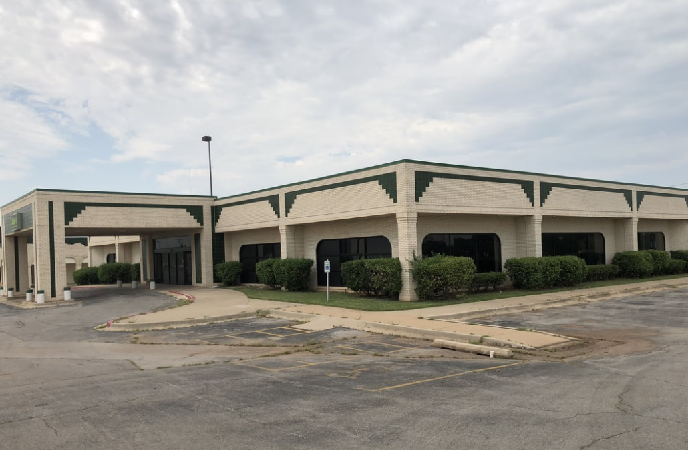

About Our Mosque
Crossroads Islamic Center of Oklahoma is committed to establishing and maintaining a facility for Muslim worship in Oklahoma City. All are welcome and invited to use the space for their spiritual, educational and social needs. We serve the spiritual, religious and communal needs of the community through worship, charity, education and civic engagement. Our practicing principles are moderation, tolerance and inclusiveness within the structural limits of the Quran and Sunnah.
Crossroads Islamic Center performs regular daily prayers five times a day along with Friday prayer and Eid prayer. We offer weekly religious classes for children. During the month of Ramadan we offer food (IFTAR) to break fast every day.
All the activities are funded by donation from the people.
Daily Prayer Times (Oklahoma City)
Loading today's prayer times...
| Prayer | Time |
|---|---|
| Loading... | |
Prayer times are updated daily for Oklahoma City (ISNA method).
Our Pictures
Here are some of our pictures of our location and events.
LOCATION
Crossroads Islamic Center of Oklahoma
7004 S I-35 Service Rd, Oklahoma City, OK 73149
Donate to this Mosque
Please donate to this masjid generously for the cause of Allah SWT to support all the activities in the masjid. Do not hesitate to donate any amount - big or small. Every little bit counts. May Allah SWT reward you and give you place in Jannat ul Firdous.
Contact Us
For any questions please contact us at oklahomacico@gmail.com
© Copyright Crossroads Islamic Center of Oklahoma. All right reserved.